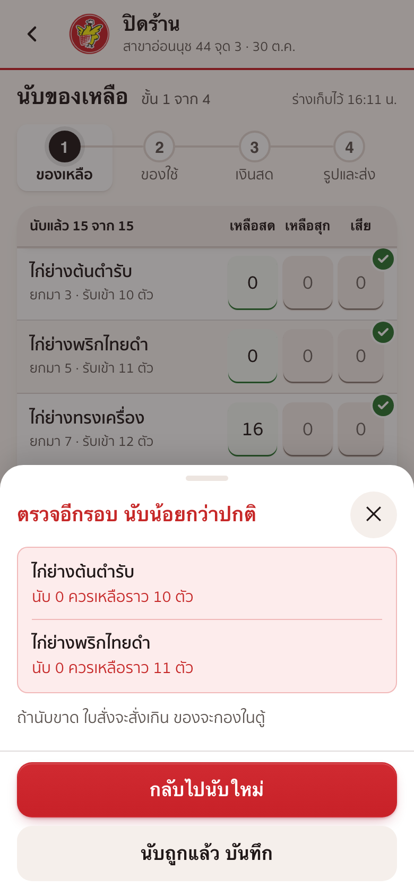

ติดตรงไหน เปิดหัวข้อนั้นดู
1หนึ่งวันของเรา
- ร้านเปิด 11:00 น.เปิดร้าน ถ่ายรูปหน้าร้านเปิดร้าน
- ของ CPF มาส่ง ราว 17–18 น.นับของที่มา ถ่ายใบส่งของรับของ
- ระหว่างวันมีเรื่องผิดปกติ แจ้งทันทีแจ้งปัญหา
- ระหว่างวันอยากหยุดหรือลาขอหยุด/ลา
- ระหว่างวันห่อเสร็จทุกรอบ กดบอกแอปห่อข้าวเหนียว
- ระหว่างวันชั่ง ถ่ายรูป แล้วทิ้งทิ้งของเสีย
- ระหว่างวันซื้อของเองหรือจ่ายเงิน ลงทันทีรายจ่าย
- ร้านปิด 21:00 น. ปิดร้านในแอปก่อน 22:00 น.นับของเหลือ เดลิเวอรี่ เงินสด ถ่ายรูปปิดร้าน
ต้องรับของก่อน ถึงจะปิดร้านได้
วันที่ของไม่มา ก็ต้องกดรับของ แล้วเลือก "วันนี้ไม่มีของมา"
ร้านหยุดทุกวันจันทร์ หน้าแรกขึ้น "วันนี้ร้านหยุด"
วันจันทร์ไม่ต้องเปิดร้านหรือปิดร้าน และแอปไม่เตือน
22:30 น. ถ้าใบสั่งยังไม่ได้ส่ง แอปเตือนอีกรอบ
นับให้ตรง ของมาพอดี
ปัดซ้ายขวาดูรูปถัดไป
ปุ่ม "ห่อข้าวเหนียวเสร็จ"
ปุ่มนี้ขึ้นตอนร้านเปิดอยู่
ใส่ผิด กด "ยกเลิกรายการล่าสุด" ภายใน 10 นาที
ยกเลิกได้เฉพาะรายการของเราเอง ที่บันทึกล่าสุด
เลย 10 นาทีแล้ว แจ้งปัญหา เลือก "กรอกผิด ขอแก้"
2เปิดร้าน
ปัดซ้ายขวาดูรูปถัดไป
เวลาที่กดเปิดร้าน คือเวลาเข้างานของเรา
รูปไม่ชัด กดลบแล้วถ่ายใหม่ได้
ถ้าหน้านี้ขึ้น "ยังไม่ได้ปิดร้านวันก่อน"
กด "ปิดร้านที่ค้างก่อน" ปิดให้เสร็จ แล้วค่อยเปิดร้านวันนี้
3รับของ
ปัดซ้ายขวาดูรูปถัดไป
ปุ่ม "วันนี้ไม่มีของมา" กับ "+ มีของอื่นมาด้วย" อยู่ล่างสุดของหน้า เลื่อนลงไปหา
วันที่มีของมา ต้องถ่ายใบส่งของทุกครั้ง ไม่ถ่ายบันทึกไม่ได้
ถ่ายได้ถึง 3 รูป
CPF ส่งของอื่นมาแทน หาในรายการ "เลิกขายแล้ว"
รับของแล้ว แก้ตัวเลขได้จนกว่าจะปิดร้าน
4ปิดร้าน 4 ขั้น
ปัดซ้ายขวาดูรูปถัดไป
ปิดร้านแล้ว การ์ดปิดร้านเข้ากลุ่มพนักงาน
ของใช้ที่ต้องซื้อเองที่ใกล้หมดหรือหมด มีการ์ด "ของใช้ต้องซื้อเอง" แยกอีกใบในกลุ่มพนักงาน
เป๊ปซี่ น้ำดื่ม นับเป็นแพ็ค
ไก่จ๊อ 1 ไม้ = 5 ชิ้น
ครึ่งตัว พิมพ์ .5 เช่น 2.5
ปิดหน้าแล้วเปิดใหม่ แอปถามอีกรอบ จนกว่าจะปิดร้าน
ปิดร้านย้อนหลัง ของเสียวันนั้นลงในแอปไม่ได้แล้ว
ถ้ามี เขียนในช่อง "ฝากบอกเจ้าของ"
นับน้อยกว่าปกติ

123- กดปุ่มแดงไปขั้นถัดไป ถ้านับน้อยกว่าที่ควรเหลือมาก แผ่นแดง "ตรวจอีกรอบ นับน้อยกว่าปกติ" ขึ้น พร้อมรายการของ
- นับผิด กด "กลับไปนับใหม่" แถวนั้นขึ้นสีแดง
- นับถูกแล้ว กด "นับถูกแล้ว บันทึก"
นับขาด ใบสั่งจะสั่งเกิน ของจะค้างตู้
ของที่กด "นับถูกแล้ว บันทึก" ไปขึ้นในการ์ดปิดร้านที่เจ้าของเห็น
ตัวเลขชุดเดิมไม่ถามซ้ำ
นับได้มากกว่าที่มี
ปัดซ้ายขวาดูรูปถัดไป
ยังไม่กดปุ่มใด ไปขั้นถัดไปไม่ได้
กด "ของมีจริง ไปต่อ" ส่วนเกินนับเป็นของที่เข้ามาเพิ่มวันนี้ ยอดขายไม่ติดลบ
เจ้าของเห็นในการ์ดปิดร้าน ส่วน "นับเกิน ของมาเพิ่ม"
ของที่เราซื้อเอง ลงที่หน้ารายจ่าย ใส่จำนวนที่ซื้อมาด้วย
ขั้น 2 ของใช้ในร้าน
ปัดซ้ายขวาดูรูปถัดไป
ขั้น 3 ยอดขายและเงินสด
ปัดซ้ายขวาดูรูปถัดไป
เงินโอน ดูยอดในแอปธนาคาร
เดลิเวอรี่ช่องไหนไม่มี เว้นว่างได้
ไม่ตรง ขึ้นแดง หาให้เจอก่อนปิด
เงินสดที่จ่ายจากลิ้นชัก แอปหักให้เอง
ขั้น 4 ถ่ายรูปและส่ง
ปัดซ้ายขวาดูรูปถัดไป
ช่อง "เสีย" ตอนปิดร้านแตะไม่ได้ แอปใส่ยอดที่บันทึกไว้ให้เอง
แตะช่องนั้น มีปุ่ม "ไปบันทึกของเสีย" ตัวเลขที่นับไว้ไม่หาย
เก็บร้านแล้วมีของต้องทิ้ง บันทึกให้เสร็จก่อนกดปิดร้าน
ช่องที่ขึ้น 0 แตะแล้วพิมพ์ทับได้เลย ไม่ต้องลบ 0
ปิดแอปกลางทางได้ ตัวเลขยังอยู่ แต่รูปต้องถ่ายใหม่
กดปิดร้านแล้ว แก้ตัวเลขเองไม่ได้
ปิดร้านหลังเที่ยงคืน ยังนับเป็นวันเดิม จนถึงตี 5
มีอะไรอยากบอกเจ้าของ เขียนช่อง "ฝากบอกเจ้าของ"
5แจ้งปัญหา
ปัดซ้ายขวาดูรูปถัดไป
เครื่องพัง ลูกค้าร้องเรียน ของ CPF มาผิด การ์ดเข้ากลุ่มพนักงานทันที
เรื่องอื่นเจ้าของเห็นตอนปิดร้าน
เจ้าของกด "รับทราบ" แล้ว หน้าแรกส่วน "เรื่องของฉัน" ขึ้น "รับทราบแล้ว"
6ทิ้งของเสีย
ปัดซ้ายขวาดูรูปถัดไป
ทิ้งเมื่อไหร่ บันทึกตอนนั้นเลย
ต้องมีรูปตาชั่ง น้ำหนักอย่างน้อย 10 กรัม และรูปตอนทิ้งลงถัง
ทิ้งได้ไม่เกินจำนวนที่มีในร้านวันนี้
บันทึกแล้วแก้เองไม่ได้ ผิดให้บอกเจ้าของ
ดูของที่ทิ้งไปแล้ว ที่แท็บ "ทิ้งแล้ววันนี้"
ตอนปิดร้าน ช่อง "เสีย" แตะไม่ได้ แอปใส่ยอดจากหน้านี้ให้เอง
ปิดร้านแล้ว บันทึกของเสียของวันนั้นไม่ได้
เก็บร้านแล้วมีของต้องทิ้ง ให้บันทึกก่อนกดปิดร้าน
7ลงรายจ่าย
ปัดซ้ายขวาดูรูปถัดไป
ซื้อรอบเดียวหลายอย่าง ติ๊กให้ครบ ลงเป็นบิลเดียว รูปเดียว
ไม่มีใบเสร็จ ถ่ายของที่ซื้อแทน
เงินสดหน้าร้าน ถูกหักออกจาก "ควรมีในลิ้นชัก" ตอนปิดร้าน
บิล CPF กับเงินเดือน แอปคิดให้ ไม่ต้องลง
ลงผิด กด ✕ ที่แถวนั้น ลบได้ มีปุ่มเลิกทำ
ลบได้เฉพาะรายการของเรา ก่อนปิดร้าน
8ขอหยุด/ลา
ปัดซ้ายขวาดูรูปถัดไป
วันที่มีของ CPF เข้า ต้องรอเจ้าของอนุมัติ
ลาป่วยเลือกวันนี้ได้ อย่างอื่นขอล่วงหน้า 1 วัน
กดยกเลิกคำขอเองได้
กดผิด มีปุ่ม "เลิกทำ" ให้กดภายใน 5 วินาที
ถ้าจองลาไว้แต่มาทำงาน เปิดร้านได้เลย วันลาจะยกเลิกให้เอง
9เจ้าของดูอะไรจากรูปของเรา
เจ้าของไม่ได้อยู่ร้าน ดูร้านจากรูปที่เราถ่าย
ถ่ายให้ชัด ถ่ายตรงหมวด
รูปจากร้าน
ปัดซ้ายขวาดูรูปถัดไป
ทุกรูปที่ถ่ายในวันนั้นขึ้นที่นี่
หมวด: เปิดร้าน ใบส่งของ จอ WE POS ตู้และถาด ของเสีย แจ้งปัญหา ใบเสร็จรายจ่าย
แตะรูปเต็มจอ แล้วปัดซ้ายขวาดูรูปถัดไป
บิล CPF
ปัดซ้ายขวาดูรูปถัดไป
เพราะฉะนั้นรับของแล้ว ถ่ายใบส่งของให้เห็น QR ชัดทุกครั้ง
เจ้าของกดจ่ายผิด ยกเลิกเองได้
10เดิมทำแบบนี้ ตอนนี้ทำแบบนี้
ออกจากกลุ่ม ใช้ไม่ได้
11ถ้าเจอปัญหา
ปิดร้านวันนั้นให้เสร็จ แล้วค่อยเปิดร้านวันนี้
ถ้าขึ้นว่าของวันนั้นยังไม่ได้กดรับ บอกเจ้าของก่อน
ปิดหลังเที่ยงคืนก็ได้ ยังนับเป็นวันเดิม จนถึงตี 5
แล้วแจ้งปัญหา เลือก "ของ CPF มาผิด" ถ่ายรูป
พิมพ์ผิด กด "กลับไปแก้ตัวเลข"
ของมีจริง กด "ของมีจริง ไปต่อ"
ข้าวเหนียวห่อ ห่อเพิ่ม กด "ห่อข้าวเหนียวเสร็จ" ก่อน
ใส่เลขติดลบไม่ได้
ยังไม่ได้ ย้ายไปที่สัญญาณดีกว่า ถ้ายังไม่ได้ บอกในกลุ่มพนักงาน
12วันแรกที่เริ่มใช้แอป
ก่อนวันแรก
- เข้ากลุ่มพนักงาน
- กด "ฉันเป็นพนักงาน" ในการ์ด "ยืนยันตัวตนในร้าน"
- กด "เปิดแอป" ถ้า LINE ถามให้เพิ่มเพื่อน ให้กดเพิ่ม
- เปิดแชตร้าน เห็นเมนูด้านล่าง ปุ่มใหญ่ "หน้าหลัก" คือพร้อมใช้
วันที่ 1 ถึง 3
- ทำทุกอย่างในแอปตามปกติ
- เขียนใบนับสต็อกกระดาษควบคู่ไปด้วย
- ถ่ายรูปใบกระดาษส่งในกลุ่มพนักงานตอนปิดร้าน
- เจ้าของเทียบตัวเลขทุกคืน ไม่ตรงจะบอกในกลุ่ม
วันที่ 4 เป็นต้นไป
- ใช้แอปอย่างเดียว
- เก็บใบกระดาษเปล่าไว้ในร้าน ใช้วันเน็ตล่มหรือมือถือพัง
ยังไม่รู้ ถามในกลุ่มพนักงาน